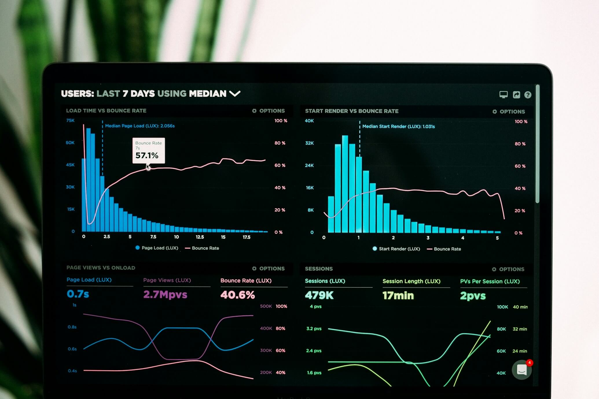

Extraction IDP
Factures, CVs, Bons de commande
Interconnexion
APIs, Make, n8n, Zapier
Scalabilité
Gérez les pics de charge sans effort
Précision
0% d'erreur de saisie manuelle
Fini la saisie manuelle et les copier-coller
L'IA connecte vos logiciels et lit vos documents pour vous.
-
Traitement Documentaire (IDP) Nos modèles OCR dopés à l'IA sont capables de lire et comprendre la structure de n'importe quel PDF (même mal scanné) pour extraire les données vers votre ERP.
-
Routage et Catégorisation Un client envoie un email avec pièce jointe ? L'IA analyse le contenu, le catégorise (Facture, Réclamation, Demande de devise), et l'envoie au bon service automatiquement.
-
Génération Automatique de Documents Générez instantanément des contrats, devis complexes ou rapports d'intervention en fusionnant les données de vos bases de données dans des templates prédéfinis.

Comment ça marche ?
Notre méthodologie pas à pas pour un déploiement sécurisé.

1. Extraction (IDP)
L'IA lit et comprend vos documents entrants (factures, CVs, e-mails).

2. Validation Humaine
Les données sont structurées ; une validation (Human-in-the-Loop) est requise en cas de doute.

3. Routage Sécurisé
Les informations validées sont envoyées automatiquement vers vos ERP ou CRM.
Quel processus vous fait perdre le plus de temps ?
Arrêtez de lutter contre les tâches répétitives. Nos experts peuvent auditer vos processus métiers gratuitement.